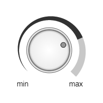

Главная → Регулятор громкости со спиральным индикатором
Регулятор громкости – графический элемент управления для изменения громкости или какой-либо другой величины (рис. 1).

Рис. 1 - Регулятор громкости со спиральным индикатором
Для создания объекта типа SegmentSpiralVolumeControl необходимо подключить следующие скрипты:
Для создания объекта в функцию-конструктор передаются основные параметры:
id - идентификатор регулятора громкости в виде текстовой строки.
context - контекст типа CanvasRenderingContext2D для отрисовки регулятора громкости.
cx - координата X центра регулятора громкости.
cy - координата Y центра регулятора громкости.
r_in - внутренний радиус индикатора громкости.
thickness - толщина индикатора громкости.
init_angle - начальный угол индикатора громкости в градусах.
angle - угол индикатора громкости в градусах.
Внешний радиус индикатора громкости r_out будет рассчитан автоматически в процессе создания объекта.
Примеры использования различных свойств и методов объекта.
min_value - минимальное значение изменяемой величины.
max_value - максимальное значение изменяемой величины.
value - текущее значение изменяемой величины.
speed - скорость изменения величины при ее программном изменении.
Регулятор громкости со спиральным индикатором - это составной объект. В его состав входят:
knob - ручка управления типа SegmentKnob.
base_spiral - базовая спираль индикатора типа SegmentSpiral.
active_spiral - активная спираль индикатора типа SegmentSpiral.
base_spiral_gradient - градиент заливки типа SegmentGradient.
base_spiral_background - цвет заливки (применяется, если не задан градиент заливки).
base_spiral_border_width - толщина границ.
base_spiral_border_color - цвет границ.
active_spiral_gradient - градиент заливки типа SegmentGradient.
active_spiral_background - цвет заливки (применяется, если не задан градиент заливки).
active_spiral_border_width - толщина границ.
active_spiral_border_color - цвет границ.
Подпись крайнего положения ручки регулятора, соответствующего минимальному значению изменяемой величины
min_text - текст подписи минимального значения min_font - шрифт подписи min_color - цвет подписи min_border_width - толщина границы текста подписи min_border_color - цвет границы текста подписи
min_init_x - начальная координата подписи
min_init_y - начальная координата подписи
min_offset_x - смещение подписи по оси X
min_offset_y - смещение подписи по оси Y
Подпись крайнего положения ручки регулятора, соответствующего максимальному значению изменяемой величины
max_text - текст подписи минимального значения max_font - шрифт подписи max_color - цвет подписи max_border_width - толщина границы текста подписи max_border_color - цвет границы текста подписи
max_init_x - начальная координата подписи
max_init_y - начальная координата подписи
max_offset_x - смещение подписи по оси X
max_offset_y - смещение подписи по оси Y
visible - видимость. Значение true обеспечивает видимость объекта.
in_progress - в процессе. Флаг принимает значение true в процессе анимации.
build() - выполняет основные вычисления формы и внешнего вида объекта при его создании, изменении параметров и в процессе анимации.
Этот метод необходимо вызывать после изменения свойств объекта, чтобы они вступили в силу.calcLabels() - определяет начальное положение подписей в зависимости от параметров базовой спирали индикатора регулятора.
draw() - функция отрисовки объекта.
instanceCopy() - создание независимой копии объекта.
angleToValue(angle) - функция вычисления значения изменяемой величины в зависимости от угла поворота ручки-регулятора.
valueToAngle(value) - функция вычисления угла активной спирали индикатора в зависимости от текущего значения изменяемой величины.
valueToThickness(value) - функция вычисления толщины активной спирали индикатора в зависимости от текущего значения изменяемой величины.
setValue(value) - функция установки текущего значения изменяемой величины.
changeValue(value, speed, delay) - анимация изменения текущего значения изменяемой величины на value со скоростью speed и задержкой delay.
catchKnob(e) - захват ручки с помощью щелчка левой кнопки мыши на ней.
Метод установлен в качестве обработчика события mousedown на холсте.
rotateKnobByMouseMovement(e) - вращение захваченной ручки перемещением курсора мыши.
Метод установлен в качестве обработчика события mousemove на холсте.
rotateKnobByMouseWheel(e) - вращение захваченной ручки вращением колеса мыши.
Метод установлен в качестве обработчика события wheel на холсте.
releaseKnob() - освобождение захваченной ручки осуществляется отпусканием левой кнопки мыши.
Метод установлен в качестве обработчика событий mouseup и mouseout на холсте.
removeKnotListeners() - удаление одноименных обработчиков событий холста, исходящих от дочернего объекта типа SegmentKnob.
Метод необходимо вызывать каждый раз, после выполнения метода build() дочернего объекта типа SegmentKnob.
События, запускаемые объектом SegmentSpiralVolumeControl, реализованы с помощью CustomEvent.
В поле detail.volume_control передается ссылка на сам объект.
segment-spiral-volume-control-changed - состояние регулятора громкости изменено.
Главная → Регулятор громкости со спиральным индикатором